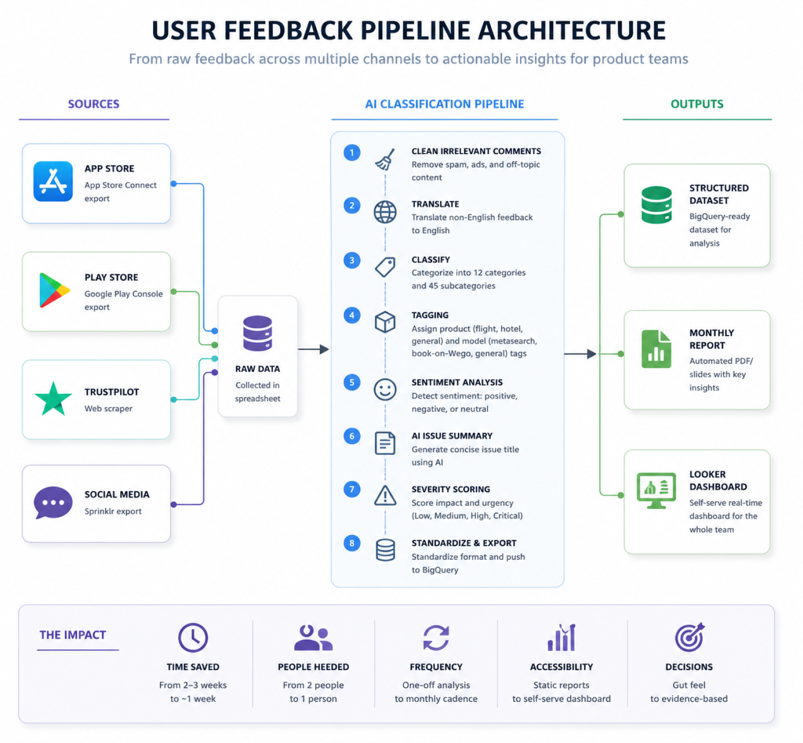
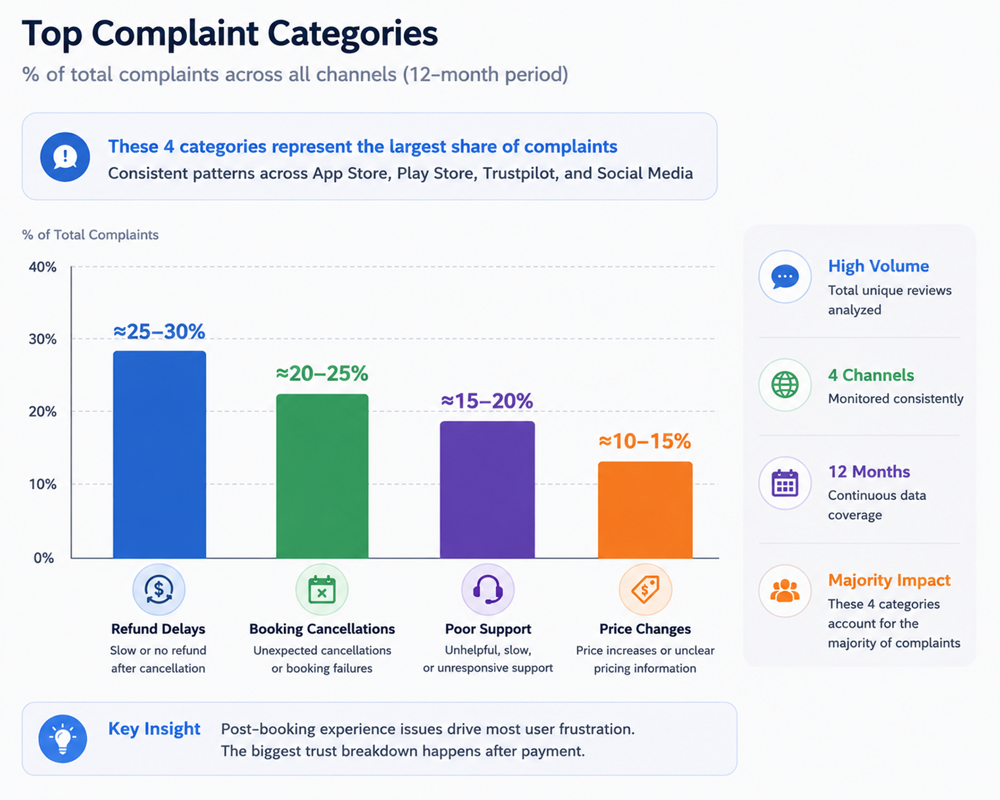

Building a User Feedback System That Replaced Gut Feel with Evidence
Some details have been intentionally generalized or omitted due to confidentiality.
Opening context
Wego received thousands of user comments every month across app reviews, social media, and support channels.
Nobody was analyzing them systematically.
Product decisions about the post-booking experience relied mostly on gut feel and scattered escalations from customer support.
I built a system to change that.
The research question
How do you turn thousands of fragmented user comments into something product teams can actually use to make decisions?
How I approached it
I built an automated feedback pipeline that collected and classified reviews from four sources:
- App Store
- Play Store
- Trustpilot
- Social media
The pipeline then processed each piece of feedback through four steps:
- 01Translated non-English feedback into English for consistent analysis
- 02Categorized issues into a custom taxonomy
- 03Scored sentiment and severity
- 04Pushed outputs into monthly reports and a self-serve Looker dashboard
Instead of running another one-off study, I focused on building infrastructure the team could use continuously.

What I found
Three patterns appeared consistently across every platform.
Finding 01
The biggest frustrations happened after payment
Users were not complaining about search.
They were complaining about refund delays, booking cancellations, and poor customer support.
The trust breakdown started after users paid.
Finding 02
Three issues caused nearly half of all flight-booking complaints
The same problems kept appearing: delayed refunds, system cancellations, and unhelpful support.
User pays → something fails → support cannot resolve it.
This was not a usability issue. It was an operational trust problem.

Finding 03
The same complaints appeared everywhere
App reviews, Trustpilot, and social media all surfaced the same issues.
That consistency mattered. It showed the problems were systemic, not isolated to a single channel.
What changed
The company went from having no structured feedback system to a recurring pipeline that surfaced categorized user issues every month.
The insights also triggered a dedicated leadership deep dive into app-rating problems, which informed roadmap discussions around refunds, cancellations, and post-booking support.
| Dimension | Before | After |
|---|---|---|
| Analysis method | Manual | Automated pipeline |
| Time to insight | 2–3 weeks | ~1 week |
| People required | 2 people | 1 person |
| Output format | Static reports | Self-serve dashboard |
| Decision basis | Gut feel | Evidence-based prioritization |
Before vs. after comparison — this is the strongest visual in the case study. Replace with a designed version if available.
Reflection
If I did this again, I would build the automation much earlier.
I also learned that stakeholders stop reading recurring reports over time. The self-serve dashboard worked better because teams could pull insights when they actually needed them.